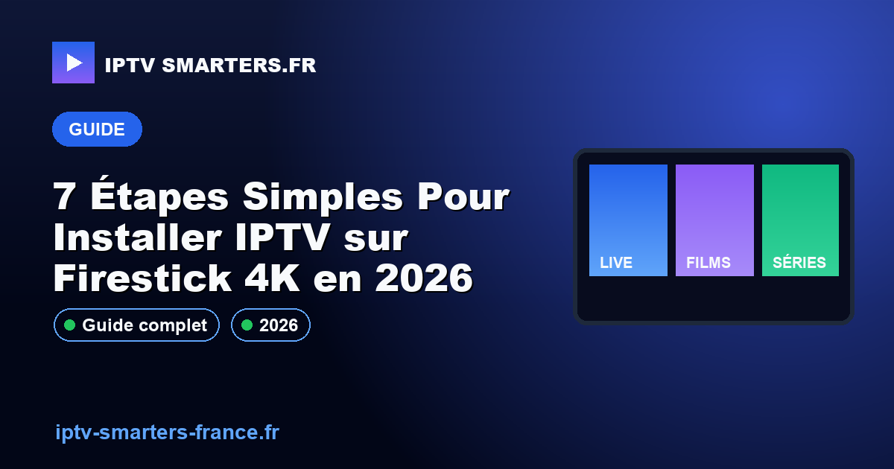

7 Étapes Simples Pour Installer IPTV sur Firestick 4K en 2026

13 mai 2026Votre Firestick 4K ne diffuse pas IPTV correctement? En 2026, l'installation est plus simple que jamais, mais encore faut-il savoir comment faire. Saviez-vous que plus de 70% des utilisateurs préfèrent le Firestick pour leur expérience IPTV? La bonne nouvelle est que vous pouvez installer votre service IPTV en moins de 10 minutes, même si vous n'êtes pas un expert. Suivez notre guide express pour transformer votre Firestick en une plateforme de streaming en direct performante. Pour découvrir les meilleures offres, consultez nos abonnements IPTV ou contactez-nous via WhatsApp.
Comment installer IPTV sur Firestick 4K ?
Pour installer IPTV sur Firestick 4K en 2026, activez les applications de sources inconnues, téléchargez un gestionnaire de fichiers, puis installez l'application IPTV souhaitée. Ce processus est rapide et permet de profiter d'un streaming fluide avec une qualité H.265/HEVC. Assurez-vous que votre Firestick est connecté à un réseau Wi-Fi puissant pour éviter tout problème de mise en mémoire tampon.
Pourquoi IPTV ne fonctionne pas sur Firestick ?
Vérification des paramètres réseau
Si votre IPTV ne fonctionne pas correctement, le problème pourrait provenir de votre connexion réseau. Assurez-vous que :
- Votre Firestick est connecté à une connexion Wi-Fi stable avec un débit minimum de 5 Mbps.
- Les paramètres DNS sont corrects pour optimiser l'accès aux flux IPTV.
- Le bitrate adaptatif est activé pour ajuster automatiquement la qualité du streaming.
Quelle est la meilleure application IPTV pour Firestick ?
En 2026, choisir la bonne application IPTV est crucial pour une expérience optimale. Pour des conseils personnalisés, contactez-nous sur WhatsApp. Voici quelques-unes des meilleures applications :
- IPTV Smarters : Compatible avec Xtream Codes API et facile à configurer.
- Tivimate : Offre une intégration complète avec EPG XMLTV et une interface utilisateur intuitive.
- Perfect Player : Prend en charge les playlists M3U et offre des options de personnalisation avancées.
Avantages de l'IPTV pour les Utilisateurs Exigeants
L'IPTV offre une expérience de visionnage enrichie avec de nombreux avantages pour les utilisateurs souhaitant une flexibilité et une qualité optimale. Voici quelques-uns des principaux avantages :
- Qualité Vidéo Supérieure : Profitez de résolutions allant jusqu'à 4K pour une expérience visuelle exceptionnelle.
- Large Sélection de Chaînes : Accédez à plus de 10,000 chaînes internationales et locales.
- Fonctionnalités Avancées : Profitez du timeshift, de l'EPG XMLTV et de l'enregistrement à distance.
Choisir le Bon Abonnement IPTV
Critères à Considérer pour un Abonnement IPTV Optimal
Lors de la sélection de votre abonnement IPTV, plusieurs critères techniques doivent être pris en compte pour garantir la meilleure expérience :
- Compatibilité : Assurez-vous que le service est compatible avec vos appareils, tels qu'Android TV, Firestick 4K, WebOS LG, Tizen Samsung et tvOS Apple TV.
- Codec Vidéo : Préférez les services utilisant le codec H.265/HEVC pour une compression efficace et une meilleure qualité d'image.
- Débit Internet : Un débit minimum de 10 Mbps est recommandé pour la HD, et 25 Mbps pour la 4K.
Pour découvrir nos offres adaptées à vos besoins, voir nos abonnements IPTV.
Configurations Techniques Recommandées
- Débit Internet : 25 Mbps pour 4K, 10 Mbps pour HD
- Codec : H.265/HEVC
- Appareils Compatibles : Android TV, Firestick 4K, WebOS LG, Tizen Samsung, tvOS Apple TV
Comment Configurer votre IPTV en Quelques Étapes
Suivez ces étapes simples pour configurer votre service IPTV rapidement et sans tracas :
- Téléchargez et installez l'application IPTV Smarters depuis votre boutique d'applications.
- Ouvrez l'application et choisissez l'option "Ajouter un utilisateur".
- Entrez les détails de connexion fournis par votre fournisseur IPTV, tels que l'URL Xtream Codes API.
- Profitez de votre contenu IPTV en naviguant dans l'interface utilisateur intuitive.
Comment fonctionne l'IPTV ?
L'IPTV fonctionne en transmettant des flux de télévision via Internet. Il utilise des protocoles de streaming tels que HLS, MPEG-DASH, et RTP pour diffuser le contenu vidéo directement sur les appareils compatibles.
Quel est le meilleur appareil pour regarder l'IPTV ?
Les appareils comme Android TV, Firestick 4K, et Apple TV sont recommandés pour regarder l'IPTV, car ils offrent une compatibilité optimale avec les codecs modernes et les vitesses de traitement nécessaires pour le streaming fluide.
Est-il légal d'utiliser l'IPTV ?
L'utilisation de l'IPTV est légale lorsque le service est souscrit auprès d'un fournisseur autorisé et que le contenu diffusé respecte les droits de diffusion et la législation locale en vigueur.
Conclusion
En résumé, l'IPTV représente une solution moderne et flexible pour accéder à un large éventail de chaînes et de contenus de qualité. Ne tardez pas à profiter de cette technologie innovante, activer mon accès maintenant. Pour plus d'informations et de conseils pratiques, Consultez nos autres guides d'installation IPTV.